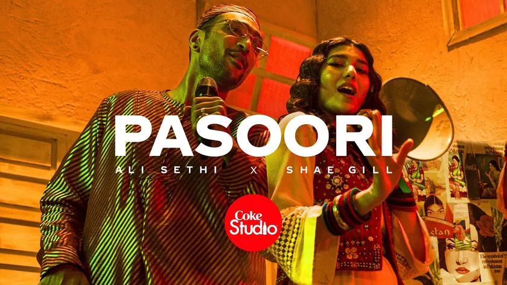
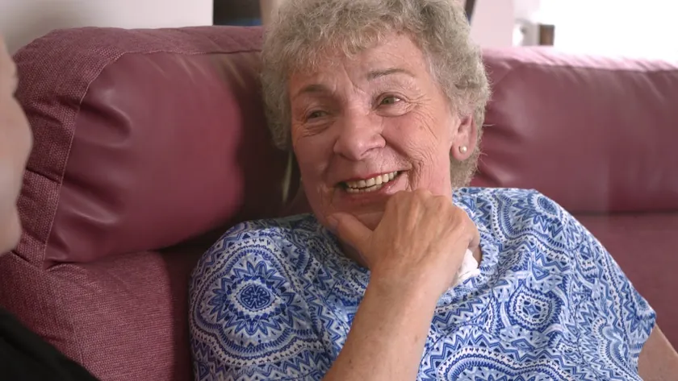
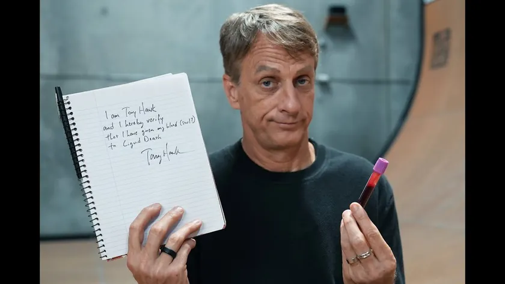
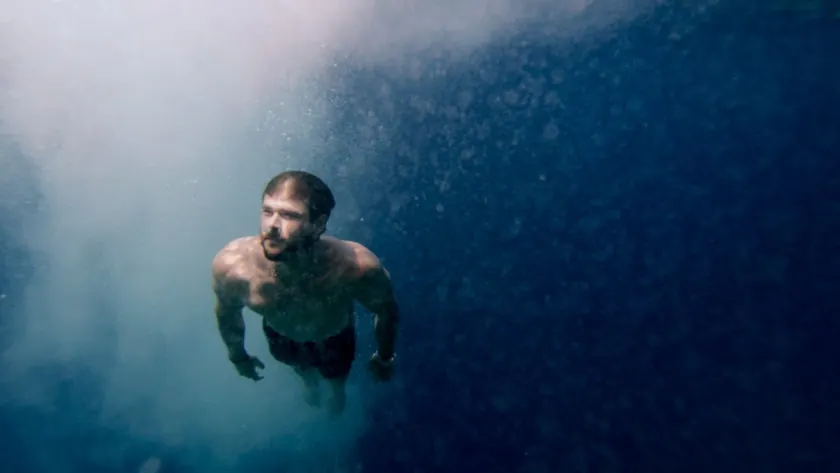
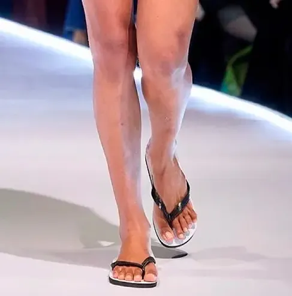
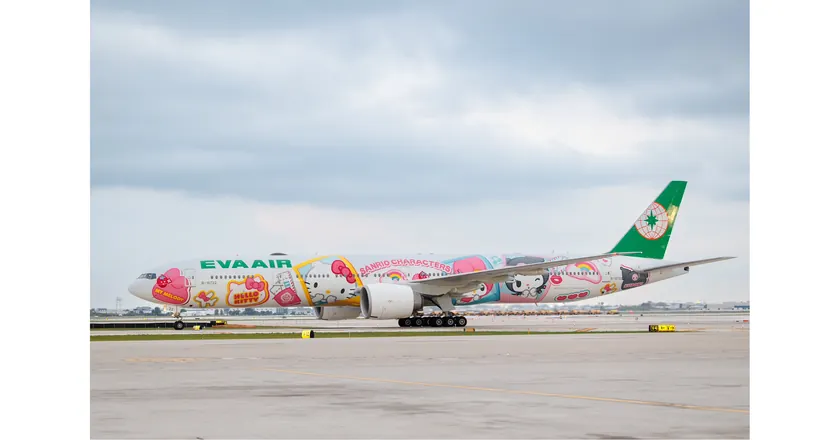
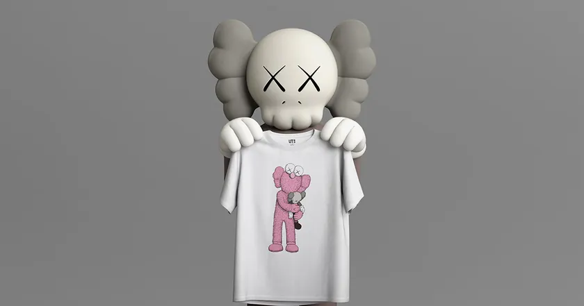
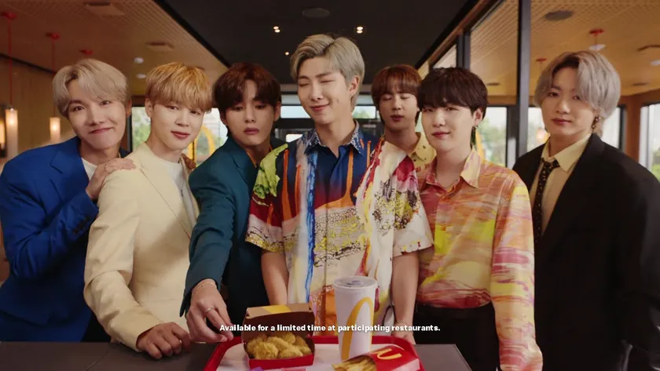
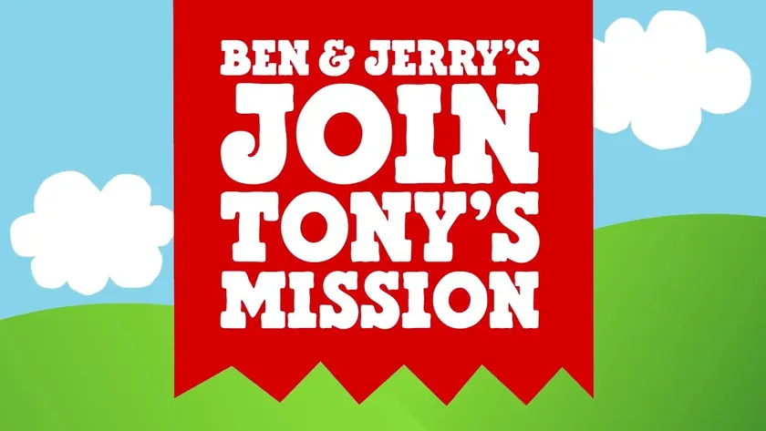

Coca-Cola × Pakistan’s musicians / 2008
Pasoori
The song that went round the world, from Coke Studio Pakistan’s channel. Notice how little of it is about the drink.
The partnership archive / Edition 07 / Edge first

“At the edge you can’t buy attention. You have to bring something else to the table.”
Six editions looked mostly at big brands in big markets. The finale looks to the edge: small brands, charities and partnerships from Kenya, Pakistan, Taiwan, Korea, Brazil, Mexico and the Netherlands. Ten cases make 100.
10 case studies / 1999 to 2022
Opening story / M-Pesa / Kenya / 2007
UK aid money, Vodafone’s technology and Safaricom’s network let Kenyans send money by text. A study in Science estimated it lifted 194,000 households out of poverty.
01 / The finding
With less money to spend, these partnerships traded in other things: a method, a community, a joke. A Dutch chocolate maker gave Ben & Jerry’s its sourcing rules. innocent gave knitters a reason to pick up their needles. Liquid Death gave Tony Hawk a stunt no big brand would have dared.
Some of the biggest ideas in the archive started here. M-Pesa turned a phone network into a bank, and it has the only peer-reviewed study in the edition. Coke Studio turned a drinks sponsorship into Pakistan’s best-known musical export, with a billion views for one song.
The edge also has the thinnest records. Six of the ten cases are archival, because smaller brands and markets publish less. The ideas travel further than the data.
Modelled effectSales or value trendReach only or archival
02 / The patterns
Credibility for reach leads, but no single exchange dominates. The edge mixes them more than any other edition, from capital for capability to network for network. Choose one to filter the archive.
One side lends a story or character the other could not create.
A designer or artist brings taste, and a big brand brings reach.
One side makes something worth watching, and the other gets it seen.
A brand gives a cause money or a stage, and the cause gives people a reason to choose the brand.
Peers or rivals join up to offer customers something none could alone.
One side invests money or infrastructure, and the other brings a capability it could not build.
A cultural figure lends authenticity, and a brand takes it to a mass audience.
03 / The screening room
Four films from the partners’ own channels, from Pakistan, Britain, California and Mexico.

Coca-Cola × Pakistan’s musicians / 2008
The song that went round the world, from Coke Studio Pakistan’s channel. Notice how little of it is about the drink.

innocent × Age UK / 2003
innocent on its Big Knit, from its own channel. Watch who does the work.

Liquid Death × Tony Hawk / 2021
Liquid Death’s film, from its own channel. A small brand making fun of how big brands do celebrity deals.

Corona × Parley for the Oceans / 2017
Corona and Parley on their island promise, from Corona’s channel.
04 / The collection
See each partnership alongside what each side brought and what it achieved. Open each case for the film, my take and how it was measured.
Modelled effectSales trendSurveyReach only or archival
10 partnerships
Safaricom, Vodafone and the UK Department for International Development
In the early 2000s most Kenyans had no bank account, but more and more had a mobile phone. Sending money home meant carrying cash or paying high fees.
The UK government’s Financial Deepening Challenge Fund backed the project, matched by Vodafone. Vodafone built the service, and Safaricom, Kenya’s largest network, ran it through its agents and customers.
After a pilot, M-Pesa launched in March 2007, letting people send and store money by text message. Within a few years it was used by most Kenyan households.
The only modelled effect in the finale measures something bigger than sales. A partnership made a market where there wasn’t one.
This is peer-reviewed, modelled evidence, the strongest in the edition. Some researchers argue the gains for typical users were modest and concentrated in certain groups, especially households headed by women.
The edge is where new partnerships get invented. Each partner brought something the others couldn’t: patient money, technology and a network people trusted.

Havaianas × Jean Paul Gaultier / 1999 / Credibility for reachFlip-Flops on the CatwalkA cheap Brazilian sandal walked a Paris runway.Designer collaboration · Shown on the runway 1999The runway debut, as Havaianas dates it · legacy factHavaianas and Jean Paul Gaultier
Havaianas had been Brazil’s everyday rubber flip-flop since 1962, worn by everyone and valued by few. The brand wanted to be seen as stylish, at home and abroad.
Jean Paul Gaultier put Havaianas on models in his show. Havaianas got the credibility of Paris fashion, and later made limited editions with designers.
Havaianas dates its fashion debut to Gaultier’s 1999 show, though some accounts give 1998. Designer collaborations and international stores followed.
The smallest gesture in the edition: a designer chose a sandal. Havaianas built a global brand on it.
The runway moment is in the brand’s history, but the date varies and its effect on sales was never published.
A partner from a different world can change how people see an everyday product. Borrow their stage, keep your price.
innocent and Age UK, from 2003
innocent was a young smoothie brand with a playful voice. Age UK, then Age Concern, wanted to help older people keep warm in winter.
The public knitted little hats. innocent put them on its bottles and gave Age UK a donation for each one sold.
The Big Knit began in 2003 and became an annual tradition, with millions of hats knitted by schools, care homes and families.
The smallest object in the archive, and one of the longest-running partnerships. Every hat was made by someone who cared.
The donations are reported by the charity, and totals vary by date. No figure shows what the campaign did for innocent’s own sales.
Give people something to do, not just something to buy. A partnership that invites participation can run for decades.

EVA Air × Hello Kitty / 2005 / LicenceThe Hello Kitty JetAn airline painted a cartoon cat on its planes, and people flew just to be on them.Licence · Launched, paused and revived 2005First flight, and still flying in new versions · legacy factEVA Air and Sanrio, from 2005
EVA Air, a Taiwanese airline, competed with larger carriers on routes to Japan. Hello Kitty, created by Sanrio, was loved across Asia.
Sanrio licensed Hello Kitty to EVA Air. EVA painted its aircraft and themed everything inside, from boarding passes to meals.
The first Hello Kitty Jet flew between Taipei and Japan from October 2005. The jets were retired in 2009, returned in 2011 for EVA’s 20th anniversary, and came back again after the pandemic in 2023.
The most joyful case in the archive. EVA turned a flight into the reason to travel.
Image: Hello Kitty Besties Jet (2024) · EVA Air press photography
The jets and their revivals are well documented. EVA hasn’t published what they do for bookings, but it has brought them back twice.
Commit fully to a licence. A character on the tail is a novelty, a character in every detail is a destination.
Coca-Cola Pakistan and Rohail Hyatt, from 2008
In the late 2000s Pakistan’s music industry was struggling, with few venues and little money. The musician and producer Rohail Hyatt wanted to bring folk, classical and pop artists together.
Coca-Cola funded and produced the show. Hyatt and the musicians made new recordings that mixed traditions, released on television and online.
The first season aired in 2008. In 2022 ‘Pasoori’, by Ali Sethi and Shae Gill, became a global hit and later the first Pakistani music video to pass a billion views on YouTube.
The best content partnership in the archive. Coca-Cola made something people would seek out, then mostly got out of the way.
Image: Pasoori (2022) · Coke Studio Pakistan’s official video thumbnail
The reach is huge and well documented. Coca-Cola hasn’t published what the show does for its sales, and some musicians have debated the role of a brand in the country’s music.
A brand can fund culture without controlling it. Give the artists the stage and stay in the credits.
Corona and Parley for the Oceans, from 2017
Corona, from Mexico, had built its brand on beaches. Parley for the Oceans was an organisation campaigning against plastic in the sea.
Corona funded clean-ups and adopted Parley’s approach of avoiding, intercepting and redesigning plastic. Parley gave Corona a credible partner and a plan.
In 2017 the partners promised to protect 100 islands from plastic by 2020. In 2018 Corona trialled plant-based six-pack rings in Tulum, Mexico.
The fit is obvious, which is the point. The test is whether the commitments outlast the campaign.
Image: 100 Islands Protected by 2020 (2017) · Corona and Parley campaign still
The clean-ups and the ring trial are reported by the partners. No figure shows the effect on plastic in the sea or on Corona’s sales.
If your brand depends on a place, protect it. Pick a partner who can hold you to the promise.

Uniqlo × KAWS / 2019 / Talent for scaleKAWS:SummerShoppers fought over T-shirts in China.Artist collaboration · Launched and sold out 99 yuanPrice of a T-shirt in China, about $14 · legacy factUniqlo and KAWS, 2019
Uniqlo, from Japan, had built its UT line on collaborations with artists and characters. KAWS, an American artist, had become one of the most collected names in the world.
KAWS designed a collection of T-shirts. Uniqlo made them in huge numbers and sold them for about 99 yuan in China.
On 3 June 2019 the collection went on sale. In China shoppers rushed stores, fights broke out, and it sold out online in minutes, with some reports saying seconds.
Like Target and Missoni in Edition 05, demand overwhelmed the shop. This time the crowd was in China.
The scenes were widely filmed and reported. Uniqlo didn’t publish sales for the collection, though it kept working with KAWS in later years.
An artist’s collectors will follow them to any price point. Plan for scarcity, or it plans for you.

McDonald’s × BTS / 2021 / Credibility for reachThe BTS MealA Korean band’s favourite order went on sale in 50 countries.Co-branded product · Launched and reported +40.5%McDonald’s global comparable sales, Q2 2021McDonald’s and BTS, 2021
McDonald’s had begun selling celebrities’ ‘famous orders’ in the US. BTS, from South Korea, had one of the most organised fan bases in the world.
BTS gave McDonald’s their order: McNuggets, fries, a Coke and two new sauces inspired by Korean recipes. McDonald’s sold it in purple packaging around the world.
The BTS Meal launched in May 2021. McDonald’s credited it, along with a new chicken sandwich, for its second-quarter growth.
A band from Seoul set the menu in 50 countries. The edge isn’t the edge any more.
Image: The BTS Meal (2021) · McDonald’s Australia campaign still
McDonald’s named the BTS Meal as a driver but didn’t separate its effect, and the comparison with 2020 flatters the number.
Global fans can carry a local partnership worldwide. Give them something to collect and share.
Liquid Death and Tony Hawk, 2021
Liquid Death sold canned water with a heavy metal attitude, mocking normal marketing. Tony Hawk was the most famous skateboarder in the world.
Hawk gave blood, which was sterilised and mixed into the paint. Liquid Death made 100 skateboard decks and sold them, with part of the profits going to charity.
In August 2021, 100 decks went on sale at $500 each and sold out quickly, reportedly in around 20 minutes.
The strangest exchange in the archive: a partner literally gave blood. It only works because both sides were in on it.
Image: Tony Hawk’s limited-edition skateboards (2021) · Liquid Death film still
The sell-out is reported. The value was in the publicity, and Liquid Death didn’t publish what the stunt did for its water sales.
A small brand can borrow a legend’s credibility with an idea big brands wouldn’t dare. Make the partner part of the joke.

Tony’s Chocolonely × Ben & Jerry’s / 2022 / Network for networkChocolatey Love A-FairA small Dutch chocolate maker taught a giant ice cream brand how to buy cocoa.Co-branded product · Launched 100%Traceable cocoa in the flavour, via Tony’s Open Chain · legacy factTony’s Chocolonely and Ben & Jerry’s, 2022
Tony’s Chocolonely, from the Netherlands, was founded to end slavery and child labour in cocoa. It had created Tony’s Open Chain, a set of sourcing rules other companies could join.
Ben & Jerry’s joined Tony’s Open Chain and made an ice cream from Tony’s caramel sea salt chocolate. Tony’s made two bars inspired by Ben & Jerry’s flavours.
Announced in 2022, the ice cream went on sale that September. Ben & Jerry’s also began moving cocoa across its range to the Open Chain principles.
The edition’s most hopeful case. The small partner set the terms, and the big one agreed to follow them.
Image: A Chocolatey Love A-Fair · Ben & Jerry’s campaign film thumbnail
The commitment and the products are documented. The effect on farmers will take years to show, and no sales figures were published.
A small brand’s method can be its most valuable asset. Share it, and a bigger partner can spread it.
No partnerships match. Try clearing the search or setting a filter back to All.
05 / The evidence
An announcement shows a deal was signed. A launch shows it happened. Only a result shows what it achieved. Each case says which of the three the record supports.
A reported price is an input, not an outcome. Where a value appears, it is flagged separately and marked as confirmed, estimated or rumoured.
A partnership can work for one side and not the other. Each case lists what each partner brought, and the evidence says which side the outcome belongs to.
Many figures come from the partners themselves or from press estimates. The source for every outcome is named, so you can judge it.
Every case gets one of five ratings, strongest first: modelled effect, sales trend, survey, reach only and archival. Here money raised for a cause counts as a trend, and a study comparing households with and without access counts as modelled. A deal term, such as a stake, is marked so it isn’t read as a result.
Each partnership involves a small brand, a charity or a market beyond the UK and US, and left a public record. Media credits identify campaign films, archived material and reporting.
06 / The finale